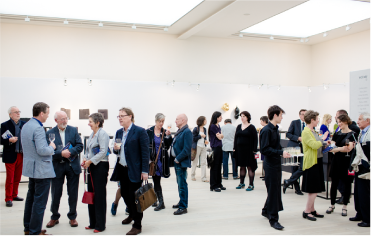

Translation events are great opportunities to keep yourself posted with the development of the translation industry, as well as grow your professional network. Below we have listed conferences and events taking place in 2016

Global Game Jam
DATE
LOCATION
OVERVIEW
Jan 29, 2016 - Jan 30, 2016
multiple locations
The game jam event (game creation) takes place around the world at many physical locations. It can be considered a hackathon focused on game development.
Evaluating Localization Providers: Results from a GALA Community Project
DATE
LOCATION
OVERVIEW
14-Jan-16
Online
Language industry experts from the GALA community formed a working group and carried out research to determine the fundamental parameters by which service providers can be measured and compared. This webinar will examine the results of their research – a list of twelve key dimensions in three main areas – that can help procurement staff compile clear data for evaluation and comparison purposes. Presenters: Véronique Özkaya of Xplanation and Maria Kania-Tasak of Sajan
The OASIS XLIFF-OMOS Technical Committee (TC) is the maintainer and developer of the TMX standard and is striving to define lossless mappings between XLIFF and other related GILT standards. TC Convener, David Filip, will talk about the project. He will be joined by OASIS General Counsel, Jamie Clark, who will explain the non-assertion intellectual property rights mode and field any related questions.
"The aim of the webinar is to present and communicate some of the basic ideas and intuitions that underlie statistical machine translation, and to do this in an accessible way without the mathematics, but with pictures. Presenter: Josef van Genabith of DFKI"
TC Camp is an unconference focused on technical communications issues, skills, challenges and the various applications used by technical communicators.
Translation Exchange a localization platform for web and mobile apps supporting over 100 languages. The two main features of the platform are Translation Markup Language (TML) and Universal Translation Memory (UTM).
The conference focuses on helping organizations better understand the emerging discipline of corporate publishing with an emphasis on teaching participants about the standards, methods and tools needed to deliver the right information, to the right people, at the right time, in the right format and language, on the device of the customer's choosing.
New Horizons For Healthcare Interpreting The California Healthcare Interpreting Association is dedicated to improving the quality and availability of language services in the delivery of healthcare.
A forum where programmers, artists, producers, game designers, audio professionals, business decision-makers and others involved in the development of interactive games gather to exchange ideas and shape the future of the industry.
The conference is intended to bring together the global content delivery community, including providers of language services, managers of global content and language technology developers.
Next-Gen Language Services: Changing Needs, Changing Models" The event will provide a forum to gather, learn and foster greater connection among interpreting’s many segments and with the larger language industry as a whole.
"Translation and Interpreting and/as Globalization ATISA encourages, supports and furthers the study of translation and interpreting by disseminating knowledge and research relevant to all areas of language mediation, regardless of discipline."
The conference is a showcase for the latest technologies in technical communication and provides access for technical communications specialists and documentation managers to preview innovative technologies, network with fellow technical writers and information architects, and connect with industry experts from around the globe.
"The conference provides an environment for learning and sharing new ideas across a broad range of topics related to translation, localization and editing. The event also includes ATA Certification Exams. Twitter: @CTA_Translators #CTAConf2016"
2016 International Medical Interpreters Conference
DATE
LOCATION
OVERVIEW
April 29, 2016 - May 01, 2016
Boston, Massachusetts USA
"Medical Interpreters: A Vital Part of Coordinated Health Care Delivery The mission of the conference is to offer a forum to showcase the latest developments in the field, to investigate its opportunities and challenges, and to advance the quality in services provided to language minority patients worldwide."
he Technical Communication Summit is intended as a source of learning for professional technical communicators around the world. The programming is intended to be a source of information and training on the latest communication techniques, publishing technologies and business trends in the industry.
The conference is a week-long event based on the Bread Loaf Writers' conference model designed to provide training and community to beginning as well as experienced translators in the pursuit of translating literary texts into English — or to those aiming to be more sophisticated readers of literary translation and to incorporate it into the classroom
The goal of the event is to teach and network with attendees, who will leave the sessions with materials needed to implement a content marketing plan for their own business and clients.
The summit is recommended to buyers of translation in different industries and government and non-government organizations, and to small and large language service providers.
Founded in 1959, the American Translators Association's primary goals include fostering and supporting the professional development of translators and interpreters and the interpreting and translating professions.
The conference features insights, tools and strategies to optimize translation, interpretation and localization, and brings together buyers and suppliers in procurement, translation and localization, and offers both groups the opportunity to network with peers and industry experts.
Second International Conference on Economic, Business, Financial and Institutional Translation
DATE
LOCATION
OVERVIEW
Aug 17, 2016 - Aug 18, 2016
Trois-Rivières, Québec, Canada
The event brings together translation practitioners, researchers, teachers and other parties engaged in economic, commercial, financial and institutional translation to discuss and debate important industry issues.
LocWorld provides an opportunity for the exchange of information in the language and translation services and technologies market. The conference aims to help companies accelerate international business by providing access to the right information, knowledge and resources to aid them when crossing language and cultural barriers.
The event is intended to provide a venue for all stakeholders of the language industry to openly discuss how they can develop networks and expand services offered.
Part of a series targeted to essential roles in the industry, this event is intended for industry decision-makers and provides a structured format for discussion with two tracks: Business Strategies and Mergers & Acquisitions
One-day meetings for buyers and providers of language services and technologies, aimed at an open exchange about language business innovation and translation technology.
4th International Conference on Game Translation and Accessibility
DATE
LOCATION
OVERVIEW
Jun 09, 2016 - Jun 10, 2016
Barcelona, Spain
The event provides a meeting point for academic and professionals working in the game industry and the game localization industry, as well as students and translators interested in the field.
Game-Changers in Localization One-day meetings for buyers and providers of language services and technologies, aimed at an open exchange about language business innovation and translation technology.
The conference will addresses topics such as video and API documentation and content requirements for mobile documentation. The translation track will focus on translation services in India, quality standards, machine translation, terminology management
Translation and Interpreting: Convergence, Contact, Interaction
DATE
LOCATION
OVERVIEW
May 26, 2016 - May 28, 2016
Trieste, Italy
The conference aoms to create a common space for reflection based on the topic, the area, the subject or the discipline in which translation and interpreting are enacted as a service to society. The official languages of the conference are English and Italian.
The theme of the 2016 session will connect the six lectures presented by professors Michael Cronin (Dublin City University) and Gerard West (University of KwaZulu-Natal in Pietermaritzburg, South Africa). Applications will be received until January 31, 2016.
One-day meetings for buyers and providers of language services and technologies, aimed at an open exchange about language business innovation and translation technology.
Tihei Mauri Ora The conference is intended to explore and share new ways of presenting stories; through new techniques and technology, research and new approaches, to working with local communities.
LocWorld provides an opportunity for the exchange of information in the language and translation services and technologies market, and helps companies accelerate international business by providing access to the right information, knowledge and resources to aid them when crossing language and cultural barriers.
The executive forums are two-days meetings for buyers and providers of language services and technologies, aimed at an open exchange about language business innovation and translation technology.
The 26th International Conference on Computational Linguistics The conference covers a broad spectrum of technical areas related to natural language and computation.
The conference focuses on software user assistance and online help. Aimed at technical authors and user assistance specialists, the conference provides an annual update on all the latest industry trends, technical developments and best practices.
The executive forums are two-days meetings for buyers and providers of language services and technologies, aimed at an open exchange about language business innovation and translation technology.
Eighth Asia-Pacific Translation and Interpreting Forum
DATE
LOCATION
OVERVIEW
Jun 17, 2016 - Jun 18, 2016
Xi’an, China
Translation and Interpreting in Tomorrow's Asia-Pacific Region Th name of the forum has changed from the Asian Translators Forum to the Asia-Pacific Translation and Interpreting Forum (APTIF) in order to reflect the diversity of the forum's presenters and attendees, and its expanding focus on translation and interpreting not just within Asia, but also around the Pacific Rim. It also reflects the increasingly global nature of translation and interpreting and their close relationship with international political relations, trade, cultural exchange and business.
The conference includes presentations, debates and workshops on everything from language issues and translation tools to translation theory and ergonomics.
LREC provides a forum for researchers, industrials and funding agencies from across a wide spectrum of areas to discuss problems and opportunities, find new synergies and promote initiatives for international cooperation, in support to investigations in language sciences, progress in language technologies and development of corresponding products, services and applications and standards.
The conference is intended for everyone interested in machine translation and translation-related tools and resources - developers, researchers, users, professional translators, managers, marketing experts - anyone who has a stake in the vision of an information world in which language issues become transparent to the information consumer.
The conference is intended for everyone interested in machine translation and translation-related tools and resources - developers, researchers, users, professional translators, managers, marketing experts - anyone who has a stake in the vision of an information world in which language issues become transparent to the information consumer.
The summit is recommended to buyers of translation in different industries and government and non-government organizations, and to small and large language service providers.
The strategic goals of the forum are to discuss and agree on best practices and possible common approaches and shared services to optimize translation efficiencies. Through a survey, the executive participants in the forum will be consulted on the discussion topics.
MLA International Symposia: Translating the Humanities
DATE
LOCATION
OVERVIEW
Jun 23, 2016 - Jun 25, 2016
Düsseldorf, Germany
Other Europes: Migrations, Translations, Transformations The conference seeks to develop ways of thinking that emerge from and address Europe's evolving political, economic, historical and philosophical role in a world of ever-shifting migrations, translations and transformations.
A forum where programmers, artists, producers, game designers, audio professionals, business decision-makers and others involved in the development of interactive games gather to exchange ideas and shape the future of the industry.
The tcworld conference offers sessions that cover localization topics. It is accompanied by the tekom-Trade Fair, including sessions (in German) and an exhibition for the field of technical communication and information development.
The conference focuses on practical issues of interpreting and translation, offering opportunities for discussions and best practices exchanges to all types of market players.
The CETRA Chair Professor 2016 is Jeremy Munday of the University of Leeds. School activities will consist of public lectures, theoretical-methodological seminars, tutorials and presentation of student papers.
Translations Studies: Moving Boundaries The congress will address the moving boundaries of translation (studies) as regards disciplinary, methodological, conceptual, professional and/or geographical aspects.
Shifting Powers: the ethics of translation in a transforming Asia The conference seeks to interrogate the role of translators in and of Asia as participants in, and commentators on, a changing world.
18th International Conference on Interpreting and Translation
DATE
LOCATION
OVERVIEW
October 27, 2016 - October 28, 2016
London, UK
The conference provides the an interdisciplinary forum for researchers, practitioners and educators to present and discuss the most recent innovations, trends and concerns, practical challenges encountered and the solutions adopted in the field of interpreting and translation.
3rd International Conference on Language, Linguistics, Literature and Translation
DATE
LOCATION
OVERVIEW
Nov 03, 2016 - Nov 05, 2016
Muscat, Oman
"Connecting the Dots in a Glocalized World The event will provide a forum for the exchange of ideas in the four main disciplines of language, linguistics, literature and translation. The aim is to highlight the relationship between global themes and local practices. The focus is on the under-examined interactions that occur as globalization takes on negotiated forms in different contexts."
Translation in Antiquity, Translating Antiquity: methods and practices
DATE
LOCATION
OVERVIEW
Dec 01, 2016 - Dec 02, 2016
Blindern, Norway
The interdisciplinary thematic area studies how ideas, values, genres, literary and rhetoric forms travel over cultural and linguistic borders in translation.